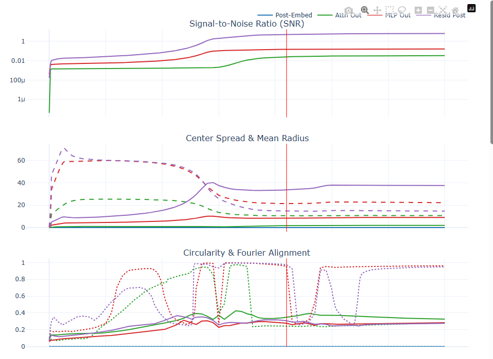
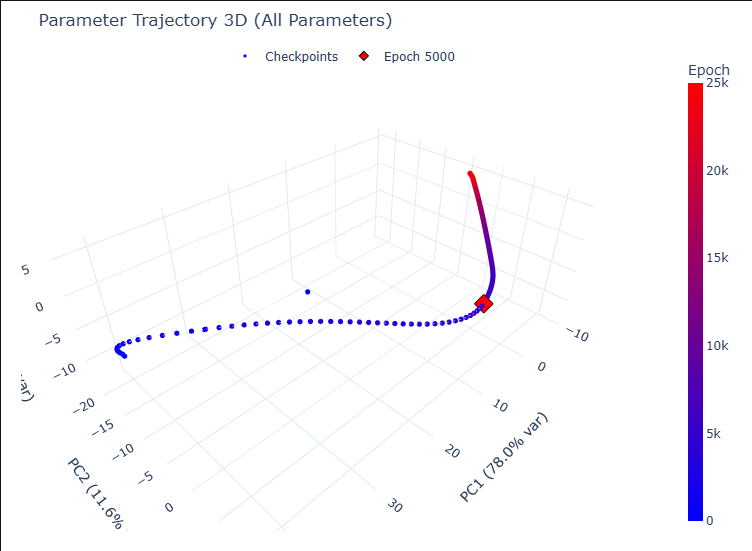

Variants and Variables
A model is never one model. If we want to claim something about how learning happens, we have to hold the things that usually hide in a config file — prime, model seed, data seed — as first-class variables, and watch what survives across all of them.
Grokking has a tidy story: train a small transformer on modular addition, watch it memorize, wait, and at some point generalization snaps into place. Told that way, it sounds like a single event that happens to a single model.
It isn't. Change the data seed and the same architecture can grok early, grok late, or never make the second descent at all. The "event" is really a distribution of trajectories, and the only way to say something durable about the mechanism is to look across that distribution — not at one lucky run.
One task, forty-one runs
So the unit of study isn't a model — it's a variant: a fully specified run, identified by its prime p, its model seed, and its data seed, tracked across a fixed series of checkpoints. Each variant carries a classification earned from its own dynamics — healthy, late-grokker, degraded, or no-second-descent — rather than a label we assigned by hand.
Below is the same variant — p=113, seed=999, data_seed=598, classified healthy — read the way these notes are meant to be read: by moving through training and watching the geometry change. The points are the model's residue classes, projected into the top principal components of the post-residual stream. Scrub, or press play.
The jump to the ring isn't gradual. It clusters around the same window where test loss falls — the structure and the generalization arrive together. That co-timing is exactly the kind of thing a single static snapshot of a finished model can't show you, and it's why the checkpoint is the unit, not the endpoint.
What every healthy variant agrees on
Read enough variants and a separation appears between what's idiosyncratic and what's structural. The which frequencies a run commits to are partly an accident of its data seed. The that it commits to a sparse set of frequencies, that signal-to-noise climbs in steps, that representations briefly expand in dimension before contracting onto a low-dimensional form — those repeat.

The middle panel is the one I keep returning to. Mean radius and center spread move in opposite directions through the transition — the classes spread apart while each class tightens — which is the geometric fingerprint of a ring forming out of a blob. The first panel says when; the third says how circular; the middle says how.
The finding is rarely a number. It's a shape, and the shape only exists in time. — from the program notes
The same story, two geometries
Two more views of the converged state — the class centroids in activation space, and the path the parameters themselves took to get there. Different objects, same arc: motion resolving into form.


None of this is visible if you only keep the final weights. The trajectory in Fig. 4 is forty-odd checkpoints of saved state; the ring in Fig. 1 is the same state, read geometrically, frame by frame. Treating the run as a variable — and the training as a path — is what makes the comparison across forty-one of them possible.
That's the whole wager of the program, stated small: if we want to understand how learning happens, we have to be willing to store the journey, not just the destination — and to look at it as motion.